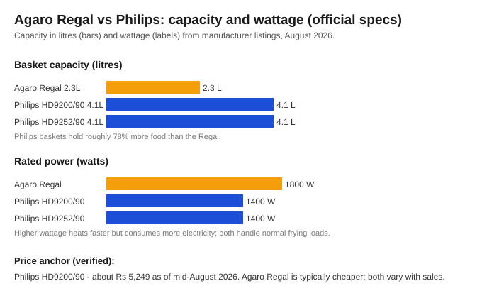

Agaro vs Philips air fryer: which one should you actually buy in India?
The short version
TL;DR: If your household is 3+ people, the Philips HD9200/90 4.1L (around Rs 5,249, verified mid-August 2026) is the smarter buy: nearly double the basket, Rapid Air Technology from the brand that popularised air frying, and a service network that actually exists outside metros. The Agaro Regal 1800W 2.3L only makes sense for 1-2 people on a tight budget, and even then the small basket is the catch. Here is the honest breakdown.Last updated: 2026-08-14. Specs verified against official Philips India and Tata CLiQ listings; prices vary with sales.
Agaro vs Philips air fryer: what is the real difference?
Strip away the marketing and this is a simple tradeoff. The Agaro Regal gives you more presets (7) and a higher 1800W rating for a lower price, but its 2.3-litre basket is the small end of the market. The Philips HD9200 costs more but gives you a 4.1-litre basket (about 78% larger), 1400W with Rapid Air Technology, and the reliability record of the company that invented the category. One is built for space savings, the other for actually feeding people.

How big a difference does capacity make?
This is the deciding factor for most buyers, so it deserves the most attention.
The Agaro Regal holds 2.3 litres. That is a single-layer basket: roughly one chicken breast plus a handful of fries, or maybe four to six samosas without crowding. For one or two people it works. For a couple with a toddler, or any house where dinner feeds three or more, you will be cooking in batches. That doubles cook time and defeats half the point of an air fryer.
The Philips HD9200/90 and HD9252/90 both use a 4.1-litre basket per their official specs. That is enough for a real quantity of fries, a fish fillet plus sides, or a whole batch of pakoras for the family. If there is one reason to stretch your budget to Philips, this is it.
Which one has more presets and power?
The Agaro Regal is rated 1800W with 7 preset programs plus a convection-oven mode. That is a genuinely useful feature set for the money, and the higher wattage means it reaches temperature faster, which matters if you cook small portions often.
The Philips HD9200 is 1400W with 7 presets (frozen snacks, fresh fries, meat, and reheating among them, per Philips' listing) and uses Rapid Air Technology. The HD9252 Essential is the trimmed-down version: same 4.1L basket and 1400W, but a simpler dial instead of the touch panel and fewer digital presets.
On paper the Agaro looks better here: more watts, plus the convection-oven mode neither Philips has. In practice, presets are convenience shortcuts and most cooks dial their own time and temperature within a month. Don't buy on preset count alone.
Agaro vs Philips air fryer comparison table
| Model | Capacity | Power | Presets | Price note (Aug 2026) | Best for |
|---|---|---|---|---|---|
| Agaro Regal 1800W | 2.3 L | 1800 W | 7 | Usually cheaper; verify current | 1-2 people, budget |
| Philips HD9200/90 | 4.1 L | 1400 W | 7 | About Rs 5,249 | Families, best value |
| Philips HD9252/90 Essential | 4.1 L | 1400 W | Simpler dial | Varies; often close to HD9200 | Family, simple controls |
Check air fryer prices on Tata CLiQ → (prices move with sales; verify the day you buy)
When should you pick the Philips HD9200?
When should you pick the Agaro Regal?
What about the Philips Essential HD9252?
Quick recap: Agaro vs Philips air fryer
- Capacity decides it: 4.1L (Philips) comfortably feeds 3+, while 2.3L (Agaro) means batch cooking.
- Power: Agaro is 1800W vs 1400W for both Philips models - faster heat-up but more electricity.
- Both Philips models use Rapid Air Technology; the HD9200 adds a touch screen and 7 presets.
- The Agaro adds a convection-oven mode and 7 presets at a lower price.
- The Philips HD9200 is the value pick for families; the Agaro Regal suits singles on a budget.
FAQ
Is Agaro a trustworthy brand for air fryers?
Agaro is an established Indian small-appliance brand with a real catalogue (kitchen, home products), so it is not an unknown white-label. That said, Philips is far older in air-frying specifically and has a wider service footprint. For a first air fryer that most people keep for years, most buyers feel safer with Philips.
Which air fryer is better for a family of 4?
Go with the 4.1-litre Philips models (HD9200 or Essential HD9252). The Agaro Regal's 2.3L basket is too small for four people.
Does the Agaro Regal really reach 1800W?
Per the Tata CLiQ listing, yes - it is rated 1800W with 7 presets and a convection-oven mode. Higher wattage means faster preheating, but the small basket limits what you can cook in one go.
Do more presets mean a better air fryer?
Not necessarily. Presets are pre-set time and temperature combos; most cooks override them within weeks. Both the Agaro Regal and Philips HD9200 have 7 presets. What matters more is capacity, even heating, and how easy the basket is to clean.
Which air fryer is cheaper to run, Agaro or Philips?
At 1400W vs 1800W, the Philips draws less power at full load, so a given session uses less electricity. The practical difference is small - both cost a few rupees per session - but the Philips wins there too.
Is the Philips HD9200 or the Agaro Regal the better value?
For most households the Philips HD9200 is the better value: the roughly 78% larger basket and Philips reliability justify the higher price. The Agaro is only the better value if you genuinely never cook for more than two.